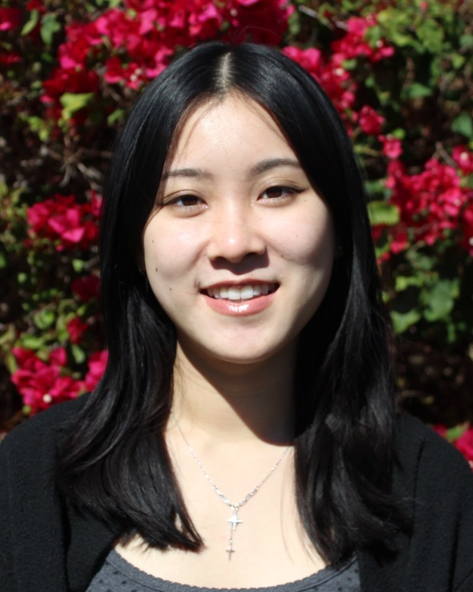

UCSD, La Jolla, CA, USA / UCI, Irvine, CA, USA

How does a single layer of neural stem cells, forming 3 to 4 weeks into human development, give rise to the remarkable diversity of neurons and astrocytes that underlie human cognition and conscious experience? An important piece of the answer lies in the fate potential encoded within individual progenitor cells long before they commit to a lineage. Understanding how this potential is specified, detected, and controlled is central to developmental neuroscience and the biology of consciousness itself. Neural stem and progenitor cells (NSPCs) are heterogeneous: subpopulations are intrinsically biased toward neuron or astrocyte fates, and the cortex transitions from predominantly neurogenic to gliogenic output across embryonic development. Neurons transmit the electrical and chemical signals underlying perception and thought, while astrocytes regulate the synaptic environment that shapes neural circuit behavior. Disruption of this finely orchestrated balance during cortical development has profound consequences for cognition. Yet the mechanisms governing how a progenitor chooses its fate remain incompletely understood. We exploit this heterogeneity using the HOAPES device, a label-free, dielectrophoresis-based microfluidic sorter that resolves NSPC subpopulations based on intrinsic electrophysiological properties rather than molecular markers. Using mouse NSPCs isolated from developmentally staged cortex, we generated fate-biased populations spanning the neurogenic-to-gliogenic transition and validated their composition by immunocytochemistry. Parallel sorting of primary human NSPCs yielded consistent biophysical signatures, suggesting these electrophysiological fate correlates are conserved across species. To enable rapid pre-differentiation assessment of cellular composition, we developed a qRT-PCR assay identifying lineage-specific gene expression signatures: NeuroD1, Dclk2, and the novel marker Mgat3 for neuron-biased progenitors, and Egfr and Sparcl1 for astrocyte-biased progenitors. The identification of Mgat3 implicates N-glycan remodeling as a previously unrecognized regulator of neuronal fate commitment. Critically, these biophysical and molecular signatures are detectable in immature, undifferentiated progenitors, before any overt commitment to a lineage, raising the question of how early in development the fate of a cell, and by extension a mind, is determined. The use of both mouse and human primary neural tissue also invites ethical reflection on what obligations researchers bear when working with the very cells that give rise to conscious experience. Together, these findings suggest that the electrophysiological and molecular identity of a cortical progenitor encodes the cellular architecture, and ultimately the cognitive capacity of the brain it will build.
Nicole Sang Lav is a first-year PhD student in the Neurosciences Graduate Program at UC San Diego, supported by the UC LEADS and Competitive Edge Fellowships. She completed dual bachelor's degrees in Human Biology and Philosophy at UC Irvine, reflecting her commitment to both rigorous bench science and the ethical dimensions of biological research. Her prior research in Dr. Lisa Flanagan's lab at UCI investigated biophysical and molecular mechanisms underlying neural stem cell fate bias. In Dr. Mercedes Paredes' lab at UCSF, she studied the spatiotemporal distribution of proliferative stem cells giving rise to interneurons. She is now working in Dr. Joseph Ecker's lab at the Salk Institute, investigating genetic and epigenetic regulatory mechanisms underlying Alzheimer's disease and glioblastoma. Nicole has been recognized with the Chancellor's Award of Distinction, the UC Campus Leadership Award, and the Excellence in Research in Biological Sciences Award, among others.